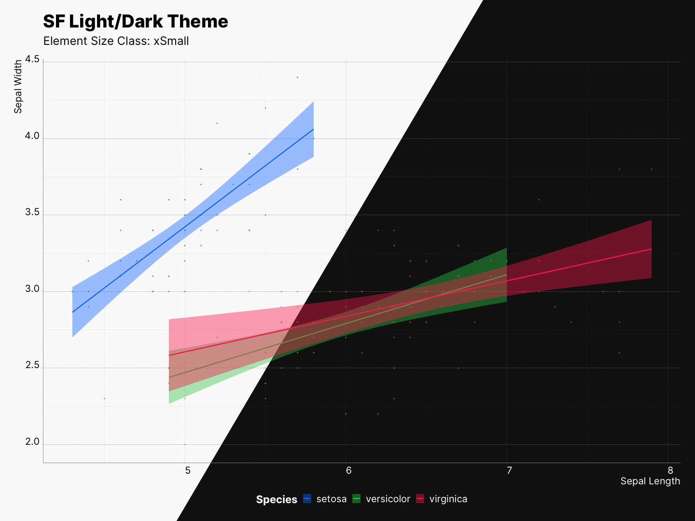

Besides dynamic type sizing, sfthemes can also scale all other elements of the plot. This is being done by multiplying all element sizes with a specific multiplier.
| class | xSmall |
Small |
Medium |
Large |
xLarge |
xxLarge |
xxxLarge |
|---|---|---|---|---|---|---|---|
| multiplier | 0.75 |
1 |
1.25 |
2 |
3 |
4 |
5 |
In contrast to ggplot2::ggsave() where you are only able to scale your elements, as mentioned, sfthemes can scale fonts, elements, or both at the same time. Moreover, the re-scaling effect can be previewed as you experiment with your plot.
⚠️ Keep in mind that these values will scale the existing sizes of each elements; therefore, it is recommended that you do not try to scale your entire plot if you are using size or lwd as one of your aes.
Scaling element sizes
By using the element_size_class parameter, we can control the scaling of the elements.
size_class <- "Medium"
gp <- ggplot(iris, aes(x = Sepal.Length,
y = Sepal.Width,
color = Species)) +
geom_point(aes(shape = Species)) +
xlab("Sepal Length") + ylab("Sepal Width") +
labs(title = "SF Light/Dark Theme",
subtitle = paste0("Size Class: ", size_class) +
geom_smooth(method="lm", aes(fill = Species))
# Light
gp + theme_sf_light(element_size_class = size_class) +
scale_colour_ios_light(accessible = FALSE) +
scale_fill_ios_light(accessible = FALSE) +
theme(legend.position = "bottom")
# Dark
gp + theme_sf_dark(element_size_class = size_class) +
scale_colour_ios_dark(accessible = FALSE) +
scale_fill_ios_dark(accessible = FALSE) +
theme(legend.position = "bottom")
Scaling font sizes
By using the font_size_class parameter, we can control the scaling of the fonts.
size_class <- "Medium"
gp <- ggplot(iris, aes(x = Sepal.Length,
y = Sepal.Width,
color = Species)) +
geom_point(aes(shape = Species)) +
xlab("Sepal Length") + ylab("Sepal Width") +
labs(title = "SF Light/Dark Theme",
subtitle = paste0("Size Class: ", size_class) +
geom_smooth(method="lm", aes(fill = Species))
# Light
gp + theme_sf_light(font_size_class = size_class) +
scale_colour_ios_light(accessible = FALSE) +
scale_fill_ios_light(accessible = FALSE) +
theme(legend.position = "bottom")
# Dark
gp + theme_sf_dark(font_size_class = size_class) +
scale_colour_ios_dark(accessible = FALSE) +
scale_fill_ios_dark(accessible = FALSE) +
theme(legend.position = "bottom")
Scaling everything together
By using the size_class parameter, we can control the scaling of both the elements, and fonts.
See readme for the code.